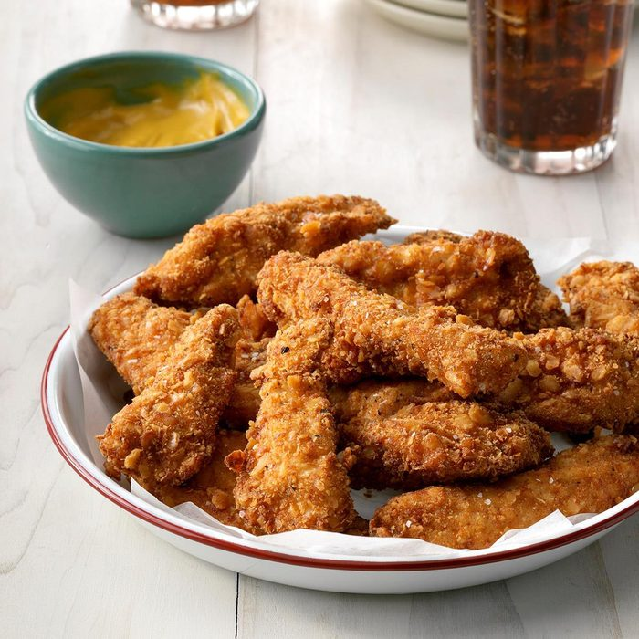

Inspired by: Chick-Fil-A Chick-n-Strips
I recently made this recipe of Mom's for my in-laws and they told me it was the "best fried chicken ever."
Slicing the chicken breasts into strips cuts down on cooking time and ensures every piece is crunchy and evenly coated.
Serve the homemade chicken tenders with your favorite dipping sauce.
Ingredients
- 2-2/3 cups crushed saltines (about 80 crackers)
- 1 teaspoon garlic salt
- 1/2 teaspoon dried basil
- 1/2 teaspoon paprika
- 1/8 teaspoon pepper
Recipe instructions
- In a shallow bowl, combine the first 5 ingredients. In another shallow bowl, beat egg and milk. Dip chicken into egg mixture, then cracker mixture.
- In an electric skillet or deep-fat fryer, heat oil to 375°. Fry chicken, a few strips at a time, for 2-3 minutes on each side or until golden brown. Drain on paper towels.
Return to top
Return to main page